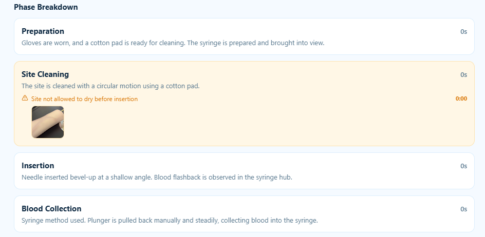
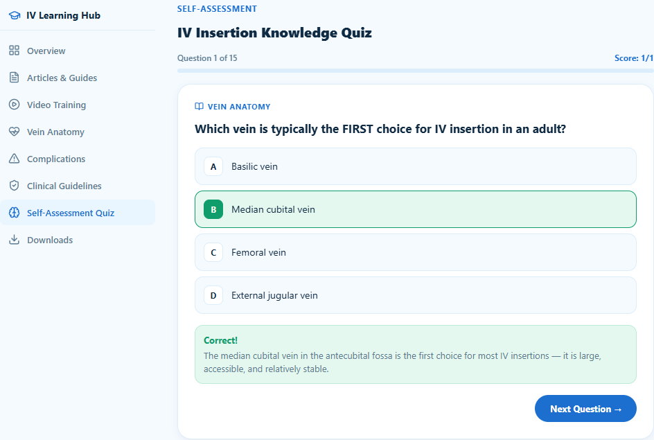

For people learning IV cannulation.
Built for the many trainees who get little supervised practice time. It adds repetitions and feedback between sessions with an instructor.
Four tools in one app.
Record or upload a practice attempt on a manikin. The app breaks it into the phases of the procedure (needle preparation, site cleaning, vein location, insertion, suction and securing) and gives feedback on each.

Ask about IV insertion, complications and technique. Answers are retrieved from 107 curated clinical reference documents, and the chatbot says so when its references do not cover a question.
Risk-tiered patient scenarios, from a practice mannequin to difficult-access adults, so learners meet variety before real patients.
Vein anatomy guides, clinical guidelines and a self-assessment quiz to revise the foundations that trainees told us they most often forget. A session history lets learners review past chats and practice attempts.

Practise. Record. Improve.
Teach IV skills? Try VascuAI with your students.
We are running small pilots with nursing and simulation teams and want your feedback on how it fits your curriculum.